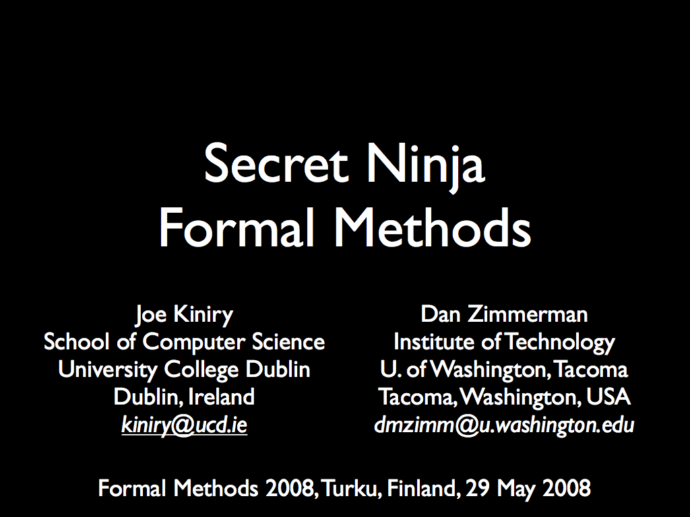
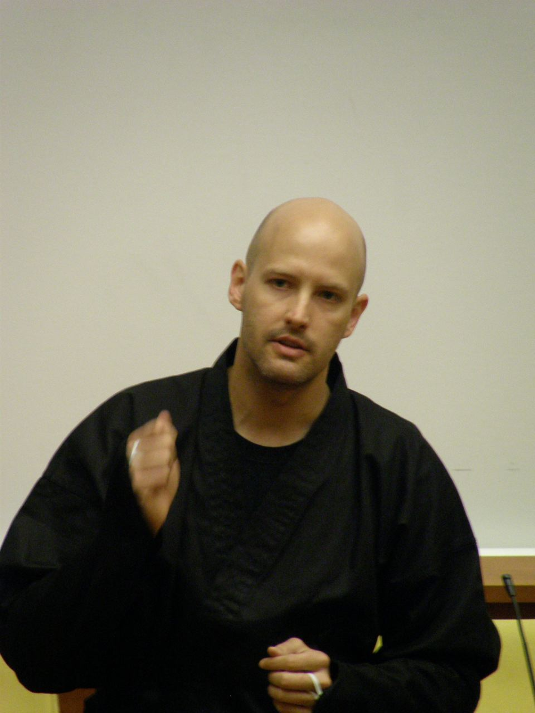
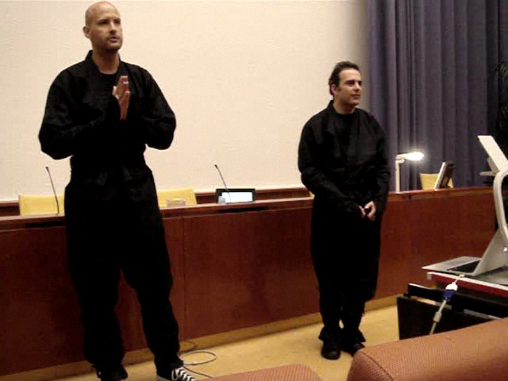

Secret Ninja Formal Methods
Joe Kiniry and Dan Zimmerman gave the following talk entitled Secret Ninja Formal Methods at Formal Methods 2008. This talk was given by both Joe and Dan in tandem in full ninja uniforms. The audience enthusiastically received this (humorous) talk and more photos and videos will be available here soon.
|  |
Abstract: The use of formal methods can
significantly improve software quality. However, many
instructors and students consider formal methods to be too
difficult, impractical, and esoteric for use in undergraduate
classes. This paper describes a method, used successfully at
several universities, that combines ninja stealth with the
latest advances in formal methods tools and technologies to
integrate applied formal methods into software engineering
courses. |
|  | Joe Kiniry (aka "Ninja Rei", aka "Ninja Zero") |
|  |
Joe Kiniry (aka "Ninja Rei", aka "Ninja Zero") and Dan Zimmerman
(aka "Ninja Ichi", aka "Ninja One") Note that we entered the auditorium and started our talk with full ninja head-coverings; only our eyes were showing! |
{kind=link}
{kind=link}